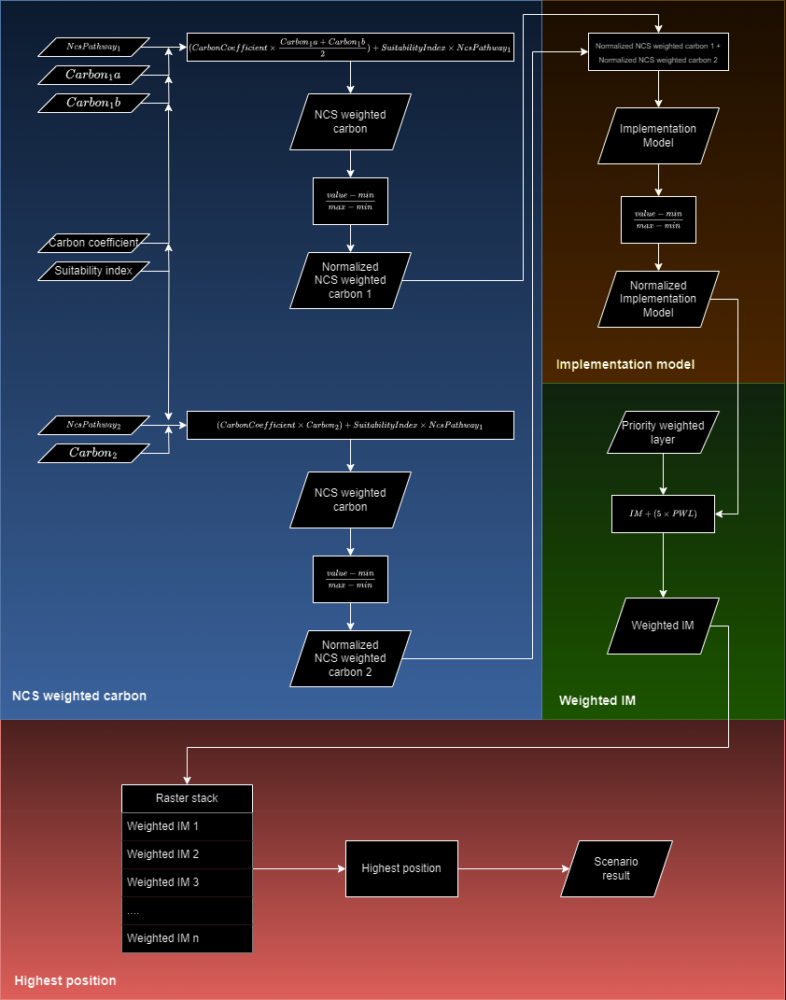
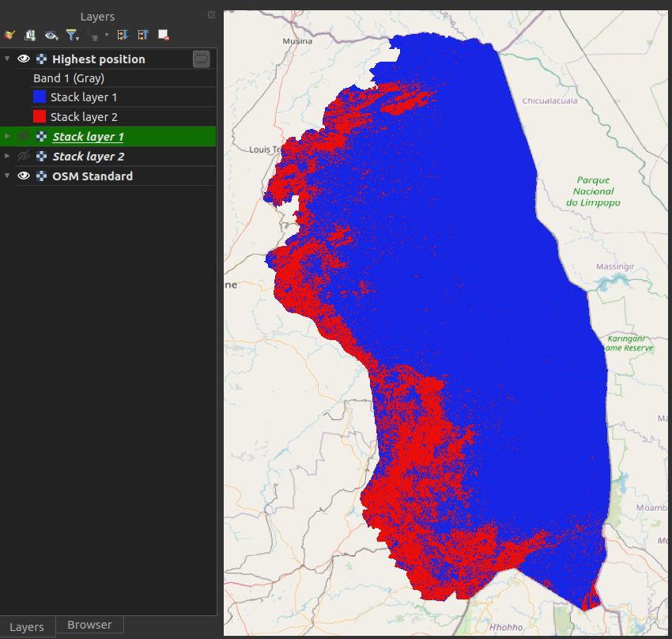

Manual¶
The manual is divided into two main sections. The first section explains the complete workflow, including the calculations and formulas used throughout the CPLUS processing process. This section helps users understand how pathways and carbon layers are processed, how activities are generated, and which algorithms are applied to create the priority-weighted (weighted activity) layer. It also covers how the highest-position values are calculated.
The second section offers a succinct overview of each step, providing references to detailed explanations for further clarification. A description of the generated report is also provided.
CPLUS calculations and formulas¶
Figure 1 shows the workflow of the CPLUS model. The workflow can be split into four parts:
- Natural climate solution (NCS) weighted carbon pathway(s)
- Activity
- Priority weighted layer (Weighted activity)
- Highest position (Scenario result)

Figure 1: CPLUS workflow
Evaluation Normalization Across Pathways¶
Conservation planning analyses often use pathways that differ in structure, scale, or number of input variables. Without correction, pathways containing more variables may contribute disproportionately to the results. To ensure fairness and comparability, the plugin performs an Evaluation Normalization step before any pathway is processed into activities.
Figure 2 shows the Evaluation normalization workflow.

Figure 2: Evaluation Normalization workflow
Purpose of Evaluation Normalization
The goal of this step is to:
-
Equalize the influence of pathways with different matrix sizes
-
Rescale all evaluation variables so they contribute proportionally
-
Integrate user-defined priorities into the weighting
-
Ensure the final activities reflect both user intent and balanced mathematical treatment
This ensures that no pathway or variable dominates merely because it has more inputs, higher numeric ranges, or larger matrices.
Normalization Workflow¶
The Evaluation Normalization step consists of four operations:
1. Suitability Coefficient × Impact Weight × User Weight
Each suitability matrix (representing system-defined suitability) is multiplied by a matrix of:
-
Impact weights (assigned per variable)
-
User weights (representing pathway importance)
This produces a weighted evaluation matrix for each pathway.
Concept:
Suitability defines how appropriate a location is, while impact and user weights define how important each variable is.
2. Scaling Pathways with Different Numbers of Variables
Pathways may have very different structures. For example:
-
Biodiversity → 3 × 5 matrix
-
Livelihoods → 2 × 3
-
Freshwater → 1 × 4
-
Carbon → 3 × 3
If left uncorrected, larger matrices contribute larger numbers simply because they contain more values.
To prevent over-representation, all weighted matrices are rescaled to a common magnitude.
This ensures that each pathway contributes proportionally to its assigned user weight—not according to its raw matrix size.
3. Normalizing Variable Influence
Within each pathway, variables may have naturally different ranges (e.g., from 0–3 vs 0–10). The plugin applies a normalization step so that each variable contributes equally within its pathway before combining them.
This prevents numeric ranges from skewing the evaluation results.
4. Producing Balanced Weighted Pathway Layers
The result of the operations above is a balanced, normalized, and user-weighted evaluation layer for each pathway:
-Biodiversity
-Livelihoods
-Freshwater
-Carbon
These evaluation layers are the inputs to the next stage of the CPLUS workflow, where they are used to generate:
-
NCS weighted carbon
-
Activities
-
Priority weighted layers
-
Highest position results
Evaluation normalization ensures that the downstream results accurately reflect user priorities and scientifically balanced structures.
NCS weighted carbon¶
The following steps/rules are considered to create the NCS weighted carbon layer(s):
- Carbon layers:
- When multiple Carbon layers are provided, the average is calculated from the layers to create a single Carbon layer
- The produced Carbon layer is multiplied by the Carbon coefficient provided by the user in the settings
- If the Carbon coefficient is zero, the value is ignored
- NCS pathways:
- Multiply the pathway raster with the Suitability index
- If the index is zero, the pathway raster is used as-is
- Equation 1 shows how the NCS weighted carbon layer is calculated
Equation 1: NCS weighted carbon
where CarbonCoefficient is the carbon coefficient value multiplied with the averaged carbon raster;
Carbon is a carbon raster;
SuitabilityIndex is the NCS pathway index value;
NcsPathway is the NCS pathway raster; and
n is the number of carbon rasters.
- The results from the above calculation are normalised to create the normalised NCS Weighted Carbon layer
- A normalised raster's pixel values range from 0 to 1
- Normalisation is done as shown in Equation 2
Equation 2: Normalised NCS weighted carbon
where value is the pixel value;
min is the minimum value of the raster; and
max is the maximum value of the raster.
Activity¶
- Because an activity can consist of multiple pathways, the normalised results will be summed
- All NCS weighted carbon layers, as created from Equation 2, are summed as shown in Equation 3 to create the activity from the pathways
Equation 3: Summed pathways for the activity
where NcsWeightedCarbon is a pathway set up by the user; and
n is the number of pathways.
- Now that the pathways have been summed for the activity, the result needs to be normalised
- The Suitability index and the Carbon coefficient then needs to be taken into account after the normalised raster has been created
- This calculation is shown in Equation 4
Equation 4: Final activity created from pathways
where value is the pixel value;
min is the minimum value of the raster;
max is the maximum value of the raster;
SuitabilityIndex is the NCS pathway index value; and
CarbonCoefficient is the carbon coefficient value multiplied with the averaged carbon raster.
- The resulting output is the final activity
Priority weighted layer (Weighted activity)¶
- This step is performed after the activities have been created
- The PWL is more important, and will therefore be multiplied by five to take this into account
- The PWL weighted is calculated as shown in Equation 5
Equation 5: Priority weighted layer (Weighted activity) calculation
- The resulting PWL will then be used as input to the Highest position calculation
Naturebase Decision Tree¶
The plugin incorporates The Nature Conservancy (TNC) decision-tree rules to ensure that overlapping pathway areas are resolved consistently and without double counting. These rules are implemented as a series of If/Then conditions, supplied by Conservation International, and define which pathway should take priority when spatial overlaps occur.
The decision tree follows TNC’s official Natural Climate Solutions (NCS) accounting framework. When two or more pathways overlap, the plugin evaluates the pixel using these principles:
-
Cropland supersedes all other pathways
Existing croplands are reserved for food security and therefore override any restoration or management pathways.
-
Wetlands supersede all non-cropland pathways
When wetlands overlap with forests, grasslands or other biomes, mitigation is counted toward the wetland pathway.
-
Biodiversity protection constraints apply
Pathways that would cause demonstrable harm to native ecosystems are excluded.
-
NCS Hierarchy (Protect → Manage → Restore)
After applying base rules, protection activities outrank management, which outrank restoration activities.
-
Scenario-specific rules may apply
Depending on the selected scenario, additional prioritization logic may be used (e.g., maximum cost-effective potential or maximum mitigation potential).
These steps ensure that each pixel is assigned to a single valid pathway in accordance with global NCS accounting standards. The plugin automatically applies these rules in all calculations, matrices, summaries, and reports.
Visualization of Base Accounting Rules (1) and Prioritization Rules (2)


Highest Position¶
The Highest position tool determines the raster in a stack with the highest value at a given pixel. Essentially the result is a classification, where each class represents a specific activity. If multiple rasters have the highest pixel value at a given pixel, the first raster with that pixel value in the stack will be used. Figure 2 shows an example from the QGIS description of the Highest position tool.
Figure 3: Highest position example
In the plugin, the nodata values are ignored. This means that if at least one raster has a pixel value
at that cell there will be a raster stack value. If none of the rasters in the stack has a pixel value
at that cell (e.g. each raster pixel is nodata) the output will be nodata at that pixel.
Here is an explanation of how to use the Highest position tool:
- Figure 3 shows the layer for the Highest position at stack position 1
Figure 4: Layer 1 used as the highest position input
- Figure 4 shows the layer for the Highest position at stack position 2
Figure 5: Layer 2 used as the highest position input
- Figure 6 shows the result from the Highest position calculation (Scenario result)
- Stack layer 1 (blue): Figure 2 raster had the highest pixel value
- Stack layer 2 (red): Figure 3 raster had the highest pixel value

Figure 6: Highest position result
Carbon Calculations for User-Defined Pathways¶
The plugin supports carbon impact calculations for user-defined pathways by applying distinct methods for Protection, Improved Management, and Restoration. Each pathway type requires its own calculation approach because carbon dynamics differ depending on whether carbon is being safeguarded, enhanced, or gradually sequestered over time.
Protection Pathways¶
For Protection pathways, the plugin calculates the total stored carbon within the selected area using authoritative global carbon rasters that include both biomass and soil organic carbon. These values represent existing carbon stocks and are not treated as avoided emissions. All reports clearly label the result as “stored carbon” to reflect this distinction.
The calculation follows the avoided-emissions methodology used in Naturebase workflows and draws on the reference implementation available in the avoided emissions analysis codebase.
Improved Management Pathways¶
Improved Management pathways rely on user-defined carbon impact values, which are entered through a popup interface. Because management practices vary widely and cannot be accurately inferred from spatial datasets, the plugin depends on these per-hectare values to perform the carbon calculation.
This approach allows users to incorporate project-specific data, expert knowledge, or published values to ensure accurate and relevant carbon estimates for their scenarios.
Restoration Pathways¶
Restoration pathways require a baseline comparison to determine how much carbon can be regained over time. The plugin integrates Trends.Earth to identify pixels that have remained stable for at least 20 years and uses these as a representation of healthy baseline carbon conditions.
Restoration impact is calculated as the difference between the current pixel carbon value and this baseline, and is then projected over a long-term sequestration timeline, typically spanning 50 years or more. This method reflects the gradual nature of carbon accumulation as ecosystems recover.
Reporting¶
All pathway-specific carbon calculations are included in the final scenario outputs. The report clearly identifies the method used for each pathway type, ensuring transparency and avoiding confusion between stored carbon, user-defined management impacts, and long-term restoration sequestration.
Naturebase Carbon Impact Calculation¶
The plugin automatically calculates the carbon impact of each scenario using the mitigation potential values provided by Naturebase. Because Naturebase pathways already include carbon mitigation expressed in consistent units, the plugin can directly sum these values across all pathways selected in a scenario. The resulting total carbon impact is added to the final output report and reflected in any scenario summaries.
To enable this calculation for a scenario, users should add the cplus_activity_naturebase_carbon_impact variable in Step 2 of the Activity Metrics Wizard. This ensures that the carbon metric is correctly applied and that the scenario’s total mitigation value is recorded using Naturebase’s native units of analysis.


This concludes the section on how the calculations are done.
References¶
- https://www.pnas.org/doi/10.1073/pnas.1710465114
- https://royalsocietypublishing.org/doi/10.1098/rstb.2019.0126
Plugin¶
Detailed descriptions for each UI element of the plugin. This covers steps 1 to 3, dialogs, and the settings UI.
Dock widget¶
This is the main UI of the plugin. The dock widget opens on the right side of QGIS. The dock widget consists of three tabs, each focussing on a particular phase of the analysis. Here is a short description of those steps:
-
Step 1: Scenario information. Click here for a detailed explanation.
-
Step 2: NCS pathways and activities. Click here for a detailed explanation.
-
Step 3: Weighting priorities (weighted activities). Click here for a detailed explanation.
For a detailed explanation of the plugin settings, the user can to refer the setting documentation